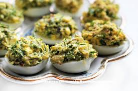

Яйца, фаршированные грибами
Очень вкусная закуска! Начинка получается нежная и ароматная. Грибы можно использовать любые, свежие или замороженные (я использовала замороженные опята). Замороженные грибы необходимо разморозить, слить всю жидкость. Из указанного количества ингредиентов получается 7–10 порций.
Ингридиенты:

7–10 яиц (вареных)
150 г грибов
150 г лука
150 г моркови
майонез
зелень по вкусу
соль
перец
растительное масло
Приготовление
Лук мелко нарезать.
Морковь натереть на мелкой терке.
Зелень мелко нарезать.
Яйца разрезать на две части.
Вынуть желтки.
Желтки натереть на мелкой терке.
На растительном масле обжарить лук.
Добавить морковь, обжарить.
Добавить грибы, посолить, поперчить.
Жарить около 20–25 минут.
Остудить.
Грибы с луком и морковью положить в блендер.
Измельчить.
Добавить желтки, перемешать.
Добавить зелень, перемешать.
Добавить немного майонеза, перемешать,
Полученной массой нафаршировать половинки яиц.